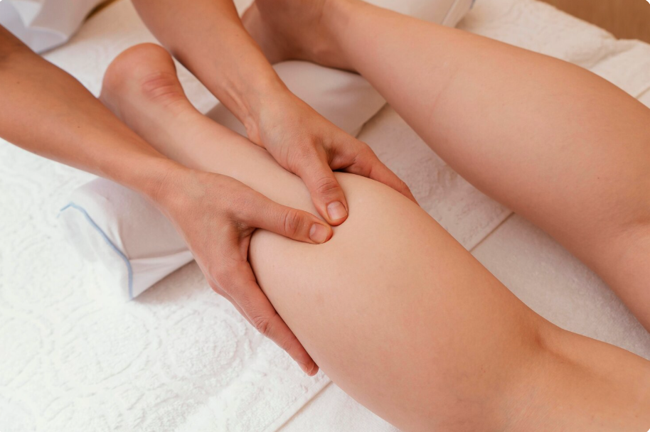

Alles over laserontharing
Van het principe van de laser tot het aantal sessies — hier vind je alles wat je moet weten voor je eerste afspraak.

Hoe gaat laseren in zijn werk?
Laserontharing werkt volgens het principe van selectieve fotothermolyse. Het laserlicht zoekt pigment op. Wanneer het haar de lichtbundel absorbeert, wordt deze energie omgezet in warmte. Die warmte geleidt naar de follikel — het haarzakje — en beschadigt daar doelgericht het groeimechanisme.
Succesvol laseren betekent dus niet dat je het haar gaat laseren, maar vooral de structuren die verantwoordelijk zijn voor de haargroei. Per behandeling worden meer groeimechanismen uitgeschakeld, waardoor je geleidelijk minder en minder haargroei ervaart.
Welke laser gebruik ik?
Diodelaser
In de praktijk werk ik met een professionele diodelaser. Dit is de meest gebruikte en bewezen laser voor permanente haarverwijdering.
4 Golflengtes
De laser heeft 4 golflengtes, wat betekent dat hij instelbaar is voor alle huidtypes — van zeer licht tot donker. Iedereen kan terecht.
Koelingssysteem −30°C
Een geïntegreerd koelingssysteem van −30°C beschermt de huid en maakt de behandeling nagenoeg pijnloos. Geen ongemak, geen brandend gevoel.
Welke huidtypes kunnen behandeld worden?
Dankzij de 4 golflengtes van de diodelaser kunnen alle huidtypes behandeld worden. Bij het intakegesprek wordt een nauwkeurige huidanalyse uitgevoerd, zodat de instellingen perfect zijn afgestemd op jouw huid.
Twijfel je of jouw haartype behandeld kan worden? Neem gerust contact op of boek een vrijblijvend intakegesprek.
Waarom zijn er meerdere behandelingen nodig?
Haren groeien niet allemaal tegelijkertijd. In één zone kunnen duizenden haren zitten in verschillende groeifasen. De laser werkt alleen optimaal in de anagene fase — de actieve groeifase. Wanneer haren in de 'slapende' toestand zijn (de telogene fase), kan het laserlicht deze haren nauwelijks beïnvloeden.
Daarom zijn meerdere behandelingen nodig, en wordt er 6 tot 8 weken tussen elke sessie gehouden. Zo worden steeds meer haren in de actieve fase behandeld.
Sessies gemiddeld
Het exacte aantal verschilt per persoon en per zone. Dit bespreken we samen tijdens het intakegesprek.
Weken tussentijd
Om elke behandeling zo effectief mogelijk te maken, houden we 6 tot 8 weken tussen de sessies.
Jaarlijks onderhoud
Na de behandelreeks houdt een jaarlijkse onderhoudsbehandeling het resultaat optimaal.
Wanneer kunnen we niet laseren?
In bepaalde gevallen is laserontharing niet mogelijk of tijdelijk niet aan te raden. Bij het intakegesprek worden alle contra-indicaties grondig doorgenomen.
Alle contra-indicaties worden ook tijdens het intakegesprek overlopen. Indien je informatie achterhoudende of niet vermeldt, draag jij als klant de verantwoordelijkheid bij eventuele gevolgen. Eerlijkheid is belangrijk voor jouw veiligheid.
Alles wat je wil weten
Nee. Dankzij het koelingssysteem van −30°C verloopt de behandeling nagenoeg pijnloos. De meeste klanten omschrijven het als een licht tintelend gevoel. Dit is een groot voordeel van de diodelaser ten opzichte van andere methodes zoals IPL of Nd:YAG.
Gemiddeld zijn 6 tot 10 behandelingen nodig, met 6 tot 8 weken tussen elke sessie. Het exacte aantal verschilt per persoon, zone en haartype. Na de reeks wordt een jaarlijkse onderhoudsbehandeling aangeraden.
Ja. De diodelaser met 4 golflengtes is instelbaar voor alle huidtypes. Tijdens het intakegesprek voer ik een grondige huidanalyse uit om de behandeling maximaal te optimaliseren. Enkel witte, grijze en rode haren kunnen niet behandeld worden.
Ja, scheren is verplicht — 24 à 48 uur voor de behandeling. Waxen is niet toegestaan voor de behandeling, omdat de haarzakjes dan leeg zijn en de laser niet optimaal kan werken.
Na de behandeling zijn er een aantal zaken die je beter vermijdt:
- Geen zon of zonnebank, 2 weken na de behandeling
- Geen warmte (sauna, hottub) gedurende 48 uur
- Geen zware training gedurende 24 uur
- Niet krabben, wrijven of harsen
- Koelende gel aanbrengen (bv. flamigel)
- SPF 50 verplicht bij blootstelling aan de zon
Ja, altijd. Bij de eerste afspraak voer ik een grondige huidanalyse uit en overlopen we alle contra-indicaties. Zo zorg ik dat de behandeling veilig en op maat is voor jou. Dit intakegesprek is vrijblijvend en gratis.